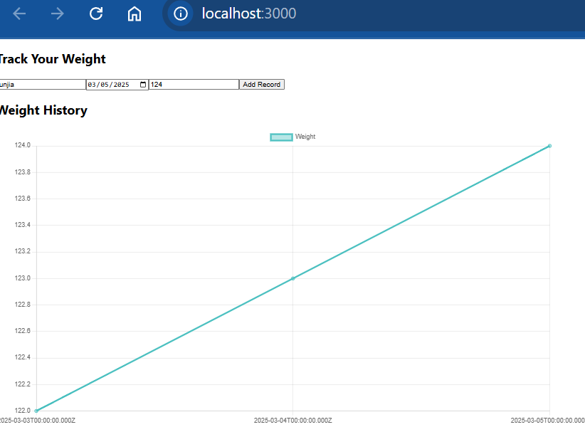
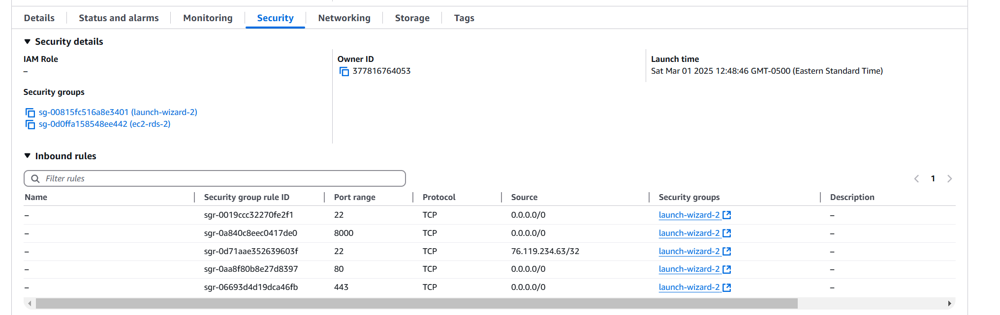
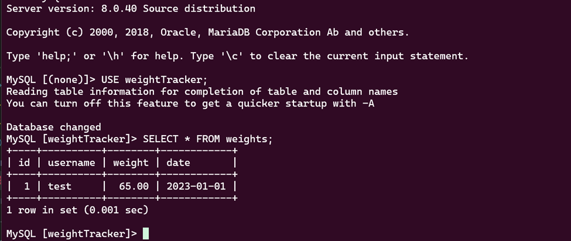
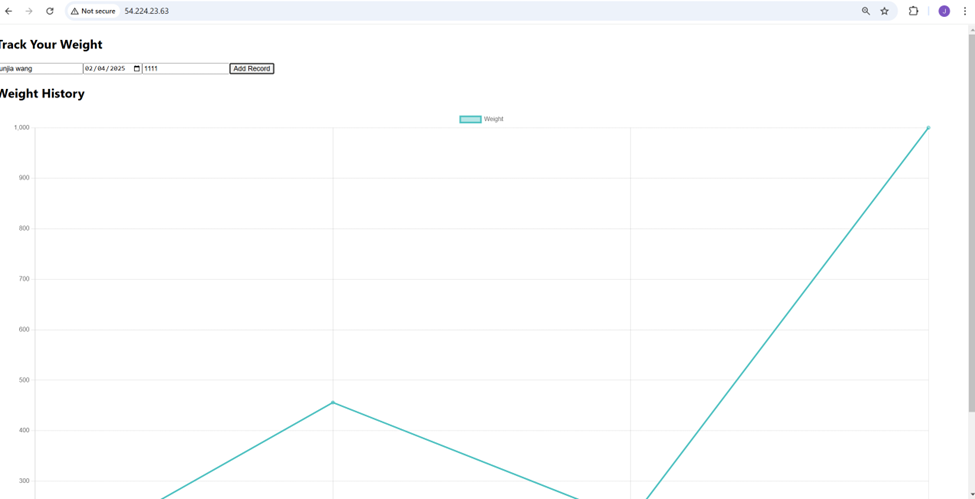
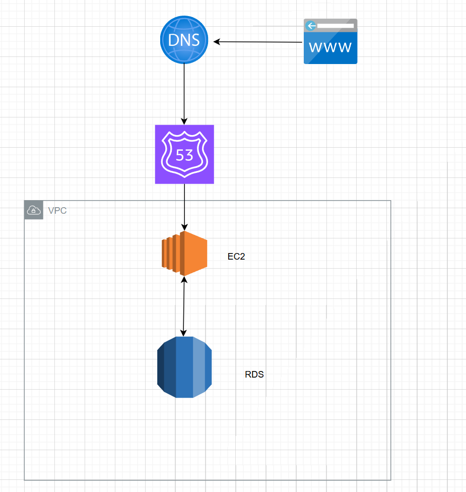
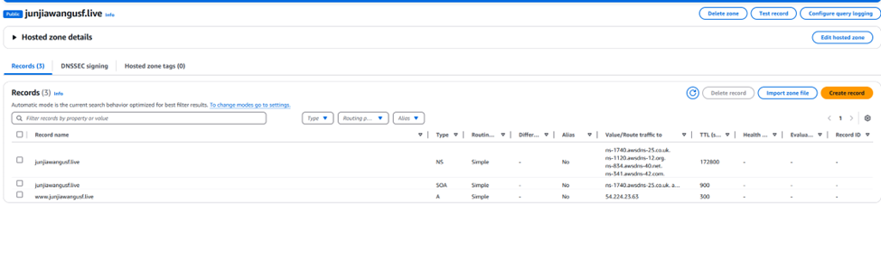
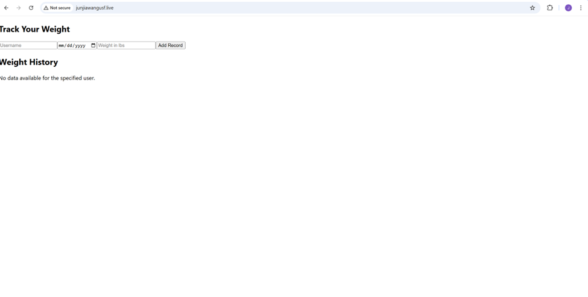
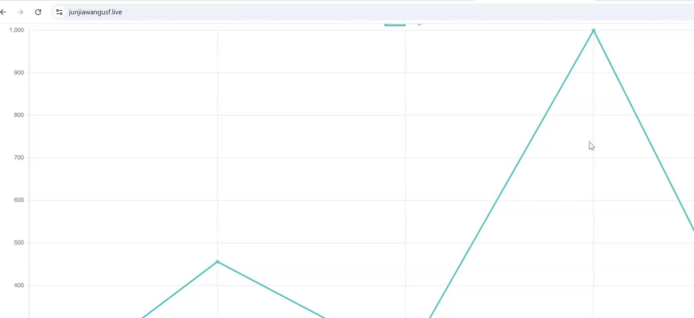

Source Repo:
https://github.com/JunjiaWangUSF/devOpsSourceRepo
Infrasturcue Repo:
https://github.com/JunjiaWangUSF/devOpsInfraRepo
Abstraction
In this article, we will explore the process of building a small website, starting from local development and progressing to more complex deployment stages. Initially, we'll set up our development environment and create our website locally. Following this, we will implement a GitHub action and conduct connectivity tests to ensure that our Docker images are ready for further stages.
We'll then introduce a nightly build process to simulate a real-world daily software cycle, providing continuous integration and helping catch issues early. Once our application is ready, we will deploy it to an Amazon EC2 instance. For web hosting, we'll use Nginx and integrate Route 53 for DNS management. We'll also secure a unique domain to give our website a professional touch. This approach offers a comprehensive overview of the website development lifecycle, from code creation to public release.
Prerequisites
- Node
- Docker
- AWS account
- Domain name
- Github account
- AWS CLI
Locally build - Source Repo
More repo deatil in later section, we can give a first look on our project:
Docker compose up
If you want to test seperately:
cd frontend
npm test
cd backend
node index.js
Running results

- This application can track users' weight by dates, key things to mentioned here, each user can only have one weight data per day
Nightly build and push images to AWS ECR - Infrasturcue Repo
Dockerized our frontend and backend
backend: https://github.com/JunjiaWangUSF/devOpsInfraRepo/blob/main/backend/Dockerfile
frontend: https://github.com/JunjiaWangUSF/devOpsInfraRepo/blob/main/frontend/Dockerfile
docker compose file: https://github.com/JunjiaWangUSF/devOpsInfraRepo/blob/main/docker-compose.yml
- Insert a dummy data when database initialized: https://github.com/JunjiaWangUSF/devOpsInfraRepo/blob/main/mysql/init.sql
- frontend running on port: 3000
- backend running on port: 8000
example .env file: https://github.com/JunjiaWangUSF/devOpsInfraRepo/blob/main/example.env
Next, we will writing some tests to ensure our backend and Database connectivity.
test file: https://github.com/JunjiaWangUSF/devOpsSourceRepo/blob/main/backend/test/weights.test.js
- this test using Jtest to make real request to our backend server and backend will check response status and dummy data exist in our database.
Important Note: Since Docker operates on an isolated network, it's necessary to map the ports from the local machine to the container's ports. This ensures that requests to each endpoint can be properly directed and reached within the Docker environment. We also request a Mysql image on our locally testing enviroment, it is best practice to use envirment variables to connect our database, which can smooth switch between remote RDS and local DB.
Github Action
https://github.com/JunjiaWangUSF/devOpsInfraRepo/blob/main/.github/workflows/nightlybuild.yml
Next, we need to set up the necessary GitHub Action secrets to securely store sensitive information required by our workflows. Here’s how to configure these secrets:
-
Navigate to the GitHub Repository Settings: Go to the 'Settings' tab of your repository.
-
Access the Secrets and Variables Section: Click on 'Secrets and Variables' to open the section where you can manage your repository secrets.
-
Add New Repository Secret: Click on 'New repository secret' to begin adding each secret.
You'll need to configure the following secrets to ensure your GitHub Actions can interact with AWS services and your database securely:
AWS_ACCESS_KEY_ID: Your AWS access key for API requests authentication.AWS_ACCOUNT_ID: The unique identifier of your AWS account.AWS_REGION: The AWS region your services are hosted in.AWS_SECRET_ACCESS_KEY: The secret key paired with your access key to authenticate requests.AWS_SESSION_TOKEN: A token required if you are using temporary credentials.DB_DATABASE: The name of your database.DB_HOST: The hostname or IP address of your database server.DB_PASSWORD: The password to connect to your database.DB_PORT: The port number your database service is listening on.DB_USER: The username used to connect to the database.MYSQL_ROOT_PASSWORD: The root password for MySQL, if applicable.
Github Action
Next, you'll need to log in to your AWS account. Once logged in, use the search bar to find and select ECR (Elastic Container Registry). Here, you should create two repositories; name one frontend and the other backend to organize your container images accordingly.
Nightly Build GitHub Actions Workflow Overview
This GitHub Actions workflow is designed to automate the build, test, and deployment processes for a software project with both frontend and backend components. Here are the key steps involved:
Trigger Events
- Schedule: Executes daily at midnight.
- Push: Activates on any push to the
mainbranch.
Environment Setup
- Runner: Utilizes Ubuntu-latest.
- Initial Setup: Checks out the code, sets up Docker Buildx, and installs Docker Compose.
Service Initialization
- Docker Compose: Starts up services using Docker Compose, with environment variables sourced from GitHub secrets for database connectivity.
Operational Checks
- Readiness Check: Ensures the MySQL database is ready for connections.
- Service Status: Checks and logs the status of Docker services.
- Log Capture: Captures and logs backend service output for diagnostics.
Database Interaction
- SQL Query: Executes a direct SQL query to verify database interaction.
Testing
- Run Tests: Executes tests within the backend service container to validate application functionality.
AWS Configuration and ECR
- AWS Login: Configures AWS credentials and logs into Amazon ECR.
Image Building and Pushing
- Backend and Frontend: Builds and pushes Docker images for both frontend and backend to Amazon ECR.
Cleanup
- Resource Management: Ensures all Docker containers are properly shut down and cleaned up post-execution.
If workflow runs correctly, you will see both fronend and backend images push to AWS ECR.
Create EC2 Instance
Follow these steps to configure your Amazon EC2 instance:
-
Access EC2:
- In the AWS Management Console, search for and select EC2.
-
Create an Instance:
- Click on Create Instance.
-
Select the Operating System:
- Choose Amazon Linux as the operating system.
-
Key Pair Setup:
- Choose a key pair name. If you don’t have one, create a new key pair.
-
Security Group Configuration:
- Create a new security group.
-
Configure SSH Access:
- Set the security group rules to allow SSH traffic. You can allow access from anywhere or restrict it to your IP address for enhanced security.
-
Elastic IP:
Next search for Elastic IP and allocate our EC2 a unchanged IP. This will hepl our DNS redirection in later steps.
Important Note: For the security group setting, we need to make sure prot 80, 443 and 22 open to your ip or anywhere.

Create RDS Instance
Follow these steps to configure your Amazon RDS instance for MySQL:
-
Access RDS:
- In the AWS Management Console, search for and select RDS.
-
Choose MySQL:
- Select MySQL as the database engine.
-
Select Free Tier:
- Opt for the Free Tier to manage costs.
-
Deployment Type:
- Choose a Single AZ (Availability Zone) instance deployment for simplicity and cost savings.
-
Management Type:
- Select Self-managed for full control over the database management.
-
Set a Database Password:
- Ensure you provide a secure password for your database.
-
Connect to an EC2 Compute Resource:
- Choose to connect to an EC2 compute resource. This ensures that your database and EC2 instance are in the same VPC (Virtual Private Cloud), facilitating secure and efficient communication.
SSH EC2 Instance
In this step ensure AWS CLI is installed and add your aws_access_key_id and aws_secret_access_key under the ./aws/credentials
chmod 400 "yourkeypair.pem"
ssh -i "yourkeypair.pem" ec2-user@ec2-yourip.compute-1.amazonaws.com
Install AWS CLI in EC2 and also set config file under./aws/credentials
sudo yum install aws-cli -y
Install Docker
sudo amazon-linux-extras install docker
sudo service docker start
sudo usermod -a -G docker ec2-user
Install MySQL workbench
sudo dnf install mariadb105
mysql -u admin -p -h database-1.xxxxxxxxxx.us-east-1.rds.amazonaws.com // Your RDS end point
Execute init.sql file in repo, you will see dummy data exist in database.

Login to ECR
aws ecr get-login-password --region us-east-1 | sudo docker login --username AWS --password-stdin 377816764053.dkr.ecr.us-east-1.amazonaws.com
Pull frontend images and check port is ready to accepct connection
sudo docker pull 377816764053.dkr.ecr.us-east-1.amazonaws.com/frontend:latest
sudo docker run -d -p 80:3000 377816764053.dkr.ecr.us-east-1.amazonaws.com/frontend:latest
Note: We only set up frontend here
Visit http://EC2IP, you will see frontend is running succefully.

Setting Up a Hosted Zone in AWS Route 53 for Your Custom Domain

Follow these steps to configure AWS Route 53 to manage your domain's DNS and redirect traffic to an EC2 instance:
-
Access Route 53:
- Navigate to the AWS Management Console and select Route 53.
-
Create a Hosted Zone:
- Click on Create Hosted Zone.
- Enter your custom domain name and follow the prompts to establish the zone.
-
Update Your Domain's Name Servers:
- Upon creation, Route 53 will assign a set of DNS servers (NS records) to your hosted zone.
- Copy these NS records and update the DNS settings on your domain registrar's site to point to these AWS name servers, delegating DNS management for your domain to AWS.
-
Create an A Record:
- In the Route 53 hosted zone, add an A record.
- Configure this A record to point to your EC2 instance’s public IP address.
- This setup ensures that all traffic to your domain is directed to your EC2 server.


Wait few hours and enter your domain

Set up Nginx and serve our backend in reverse proxy
Installing and running Nginx
sudo yum install nginx -y
sudo systemctl start nginx
Install certbot
sudo yum install -y certbot python2-certbot-nginx
Selft sign SSL certificate
sudo certbot --nginx -d yourdomain -d www.yourdomain
Set up Nginx configuration exmaple - the server as a reverse proxy for both your frontend and backend services.

sudo vim /etc/nginx/conf.d/www.junjiawangusf.live.conf
server {
server_name www.junjiawangusf.live;
# Serve frontend
location / {
proxy_pass http://localhost:8080; # Forward requests to your frontend on port 8080
proxy_set_header Host $host;
proxy_set_header X-Real-IP $remote_addr;
proxy_set_header X-Forwarded-For $proxy_add_x_forwarded_for;
proxy_set_header X-Forwarded-Proto $scheme;
}
# Serve backend API
location /api/ {
proxy_pass http://localhost:8000/; # Forward requests to your backend on port 8000
proxy_set_header Host $host;
proxy_set_header X-Real-IP $remote_addr;
proxy_set_header X-Forwarded-For $proxy_add_x_forwarded_for;
proxy_set_header X-Forwarded-Proto $scheme;
}
listen 443 ssl; # managed by Certbot
ssl_certificate /etc/letsencrypt/live/www.junjiawangusf.live/fullchain.pem; # managed by Certbot
ssl_certificate_key /etc/letsencrypt/live/www.junjiawangusf.live/privkey.pem; # managed by Certbot
include /etc/letsencrypt/options-ssl-nginx.conf; # managed by Certbot
ssl_dhparam /etc/letsencrypt/ssl-dhparams.pem; # managed by Certbot
}
server {
if ($host = www.junjiawangusf.live) {
return 301 https://$host$request_uri;
} # managed by Certbot
listen 80;
server_name www.junjiawangusf.live;
return 404; # managed by Certbot
}
Restart Nginx
sudo systemctl reload nginx
Stop frontend container
docker ps
docker stop container id
Pull backend images and run frontend in different port
sudo docker run -d -p 8000:8000 -e DB_HOST="database-1.cmkrqsxfvwur.us-east-1.rds.amazonaws.com" -e DB_USER="admin" -e DB_PASSWORD="password" -e DB_DATABASE="weightTracker" -e PORT=8000 377816764053.dkr.ecr.us-east-1.amazonaws.com/backend:latest
sudo docker run -d -p 8080:3000 377816764053.dkr.ecr.us-east-1.amazonaws.com/frontend:latest
Note:
-
Frontend Port Change: We now host our frontend on port 8080, instead of the standard port 80, because we've configured Nginx to handle the reverse proxy setup.
-
Nginx Configuration:
-
Root Access Redirection: Nginx is configured to listen on port 80. All requests to the root domain are redirected to port 8080 where the frontend is hosted.
API Access: Any requests starting with /api are redirected to port 8000, where the backend services are running.
Docker Image Handling with ECR: -
Having previously logged into Amazon ECR, if a required Docker image is not found locally, Nginx will automatically search for it in ECR and pull it as needed
Finally try our our website

